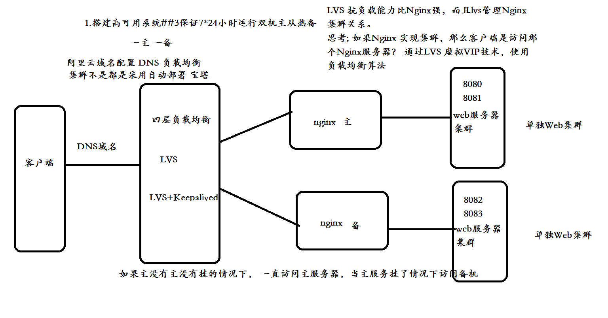
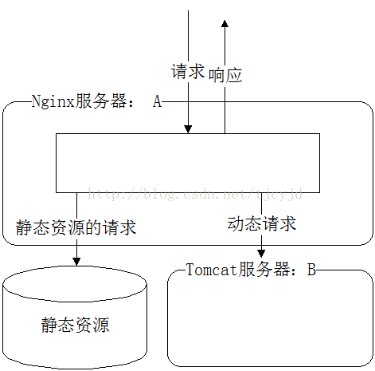

Nginx
主要功能
- http服务器
- 反向代理
- 负载均衡
- 动态路由
- 请求过滤
虚拟主机
基于端口的虚拟主机
server {
listen 80;
...
}
基于域名的虚拟主机
server {
listen 80;
server_name www.itmayiedu.com;
...
}
location语法
=开头表示精确匹配 ^~ 开头表示uri以某个~字符串开头，不是正则匹配 ~ 开头表示区分大小写的正则匹配 ~* 开头表示不区分大小写的正则匹配 / 通用匹配, 如果没有其它匹配,任何请求都会匹配到
反向代理
- 正向代理：通过客户机的配置，实现让一台服务器代理客户机，客户的所有请求都交给代理服务器处理。正向代理隐藏真实客户端
- 反向代理：用一台服务器，代理真实服务器，用户访问时，不再是访问真实服务器，而是代理服务器。反向代理隐藏真实服务端

反向代理隐藏真实内部ip地址，请求先访问nginx代理服务器,nginx服务器再转发到真实服务器中
nginx反向代理配置
http{
...
server {
listen 80;
server_name hostname;
proxy_set_header X-Forwarded-Host $host;
proxy_set_header X-Forwarded-Server $host;
proxy_set_header X-Forwarded-For $proxy_add_x_forwarded_for;
location / {
proxy_pass http://127.0.0.1:8080;
proxy_connect_timeout 600;
proxy_read_timeout 600;
}
}
}
负载均衡
所有请求先到负载均衡器，在由负载均衡器采用负载均衡算法（轮训、IP绑定、权重）分发到不同实际的服务器中
- 四层负载均衡：基于IP+端口的负载均衡（传输层），此种负载均衡不理解应用协议（如HTTP/FTP/MySQL等等）。例子：LVS（软负载），F5硬件负载
- 七层负载均衡：基于应用层的信息决定如何转发（应用层）

带来的问题
- 分布式Session一致性问题
- 分布式定时任务调度幂等性问题
- 分布式生成全局ID
Upstream Server
上游服务器，就是被nginx代理最后真实访问的服务器
nginx配置负载均衡
upstream so {
server www.baidu.com:80;
server www.163.com:80;
}
server {
listen 8080;
location / {
proxy_pass http://so/;
}
}
轮询算法
- 轮询（默认）
每个请求按时间顺序逐一分配到不同的后端服务，如果后端某台服务器死机，自动剔除故障系统，使用户访问不受影响。
- weight（轮询权值）
weight的值越大分配到的访问概率越高，主要用于后端每台服务器性能不均衡的情况下。或者仅仅为在主从的情况下设置不同的权值，达到合理有效的地利用主机资源。
# 设置权重
server www.baidu.com:80 weight=2;
- ip_hash
每个请求按访问IP的哈希结果分配，使来自同一个IP的访客固定访问一台后端服务器，并且可以有效解决动态网页存在的session共享问题。俗称IP绑定。
server {
...
ip_hash;
}
- fair（第三方）
比 weight、ip_hash更加智能的负载均衡算法，fair算法可以根据页面大小和加载时间长短智能地进行负载均衡，也就是根据后端服务器的响应时间 来分配请求，响应时间短的优先分配
- url_hash(第三方)
按访问的URL的哈希结果来分配请求，使每个URL定向到一台后端服务器，可以进一步提高后端缓存服务器的效率
动态负载均衡
Consul
Consul是一款开源的分布式服务注册与发现系统，通过HTTP API可以使得服务注册、发现实现起来非常简单
双机主从热备

LVS
可以实现传输层四层负载均衡。LVS是Linux Virtual Server的缩写，意思是Linux虚拟服务器。目前有三种IP负载均衡技术（VS/NAT、VS/TUN和VS/DR）；八种调度算法（rr,wrr,lc,wlc,lblc,lblcr,dh,sh）
Keepalived
Keepalived是基于vrrp协议的一款高可用软件。Keepailived有一台主服务器和多台备份服务器，在主服务器和备份服务器上面部署相同的服务配置，使用一个虚拟IP地址对外提供服务，当主服务器出现故障时，虚拟IP地址会自动漂移到备份服务器
故障转移
当上游服务器,一旦出现故障或者是没有及时响应的话，应该直接轮训到下一台服务器，保证服务器的高可用
配置超时时间，超时进行故障转移
location / {
proxy_pass http://so/;
proxy_connect_timeout 1s;
proxy_send_timeout 1s;
proxy_read_timeout 1s;
}
动静分离
动静分离将网站静态资源（HTML，JavaScript，CSS，img等文件）与后台应用分开部署，提高用户访问静态资源的速度，降低对后台应用访问的频次。这里我们将静态资源放到nginx中，动态资源转发到tomcat服务器中
- nginx实现方式
通过对URL或者域名的判断，进行转发

浏览器缓存
对于静态文件，例如：CSS、图片，服务器会自动完成 Last Modified 和 If Modified Since 的比较，完成缓存或者更新
SSI
服务端嵌入
ssi包含类似于jsp页面中的incluce指令，ssi是在web服务端将include指定 的页面包含在网页中，渲染html网页响 应给客户端 。nginx、apache等多数web容器都支持SSI指令。
<!‐‐#include virtual="/../....html"‐‐>
配置
server{
listen 80;
server_name www.edu.com;
ssi on;
ssi_silent_errors on;
.....